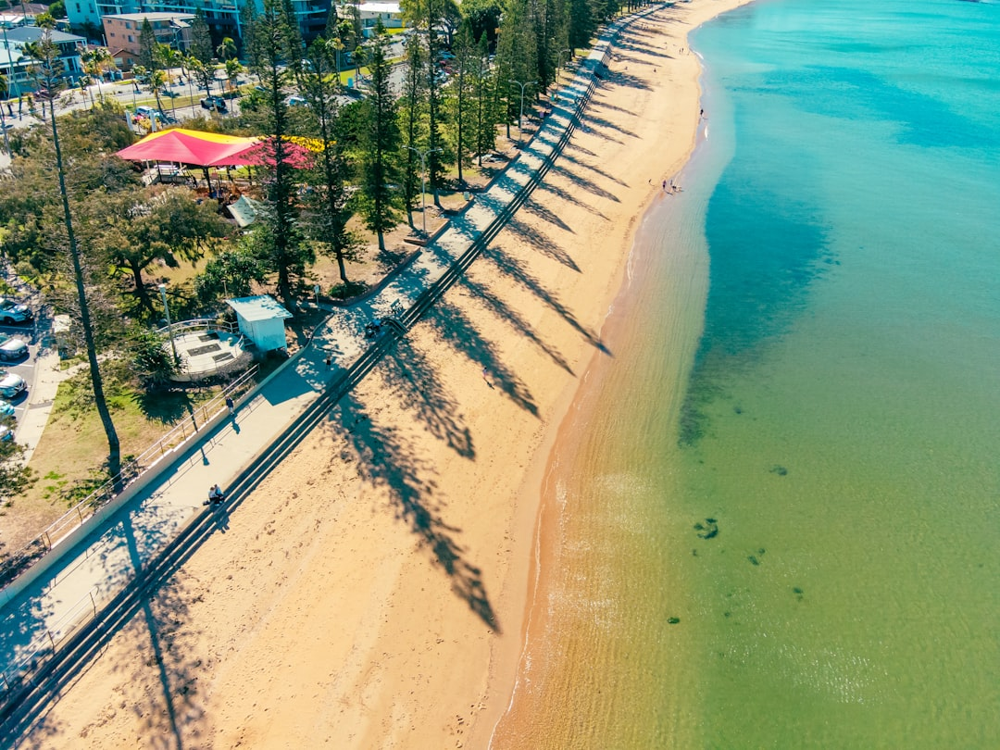

For a Brisbane retaining wall quote, the core inputs are wall height, wall length, access, material, drainage, what sits above the retained ground and whether a fence will sit on top. The published source names Brisbane, Ipswich, the Gold Coast and the Sunshine Coast, lists timber sleeper, concrete sleeper and core-filled besser block systems, and gives a rough timber sleeper guide of around $300 to $450+ based on wall face area.
For homeowners comparing retaining wall installation brisbane options, the practical decision is not only which wall looks right, but what the site, drainage, approvals and future fence line require.
Retaining Wall Installation Brisbane Explained
QLD Retaining and Fencing describes a sloped block as two connected jobs when a wall and fence meet: the wall holds ground back, while the fence depends on what supports it. A useful quote starts with height, length, access, retained load, drainage and whether a boundary fence, driveway, pool area or gate is involved.
Give the contractor enough detail to separate excavation, drainage, backfill and structure. The source page asks for suburb or postcode and project details, which helps distinguish a leaning old wall from a new wall-and-fence package or a driveway edge.
- Measure approximate exposed height and total wall length.
- Describe what sits above or behind the wall.
- Note machine or truck access limits.
- Ask which approvals or engineering triggers are being checked before the quote is finalised.
Let The Load Guide The Material
The published service list separates timber sleeper, concrete sleeper and core-filled besser block retaining walls. Timber sleeper work is presented for garden edges and lower cuts. Concrete sleeper work uses reinforced concrete panels between galvanised posts and is positioned for taller Brisbane and hinterland cuts. Core-filled besser block is described as steel-reinforced masonry for taller structural retaining.
Do not treat those categories as interchangeable. A garden terrace, a fence line and a wall carrying driveway surcharge can require different allowances. Ask why the proposed material suits the retained height, the ground behind it and the planned finish above it.
Repairs need the same scrutiny. The source page refers to leaning, bulging or rotted walls on older established cuts. Ask whether the quote repairs a limited defect or replaces a wall that has reached the end of its practical life.
Check Approvals, Engineering And Fence Height
The source says approval triggers are checked before quoting and that a fence on a retaining wall is assessed on combined height. It also notes that a wall holding up a driveway or pool carries surcharge load. Those details can affect design, approvals and itemised cost.
A practical quote should identify the trigger being considered, such as combined fence and wall height, driveway or pool surcharge, a boundary issue, a pool barrier requirement or council requirements for the area. Brisbane, Ipswich, Gold Coast and Sunshine Coast are all named in the source, but the useful question is still site-specific: what condition on this block changes the design or approval path?
For pool areas, the page refers to compliant glass and aluminium barriers built to the Queensland pool safety standard and ready for inspector sign-off. Ask early whether the wall changes barrier position, finished height or inspection sequencing.
Who This Applies To
This guide is most relevant to owners with sloped blocks, ageing sleeper walls, boundary fences over retained ground, pool barrier interfaces, driveway edges or combined wall-and-fence packages across South East Queensland.
The source gives useful locality prompts. Brisbane examples include ridge-and-gully blocks off the Taylor Range and older cut-and-fill walls in established areas. Ipswich examples include reactive clay near the Bremer and Greater Springfield estates where wall and fence may go in together. Gold Coast examples include canal or lake-edge fill, hinterland grade and salt air affecting fence hardware. Sunshine Coast examples include Buderim basalt clay, soft river flats and a council context where the page says permits are asked for on most retaining walls.
Use those notes to frame questions about soil, access, drainage, fence load and approval triggers on the quoted block.
Compare The Scope, Not Just The Total
The source says written, itemised quotes are used and that excavation, drainage and backfill should not be buried. That is the key comparison point. Two totals can look close while allowing for different drainage detail, access, disposal, engineering or fence connection work.
For retaining wall installation brisbane projects, cost should be read against material and wall face area, calculated as height multiplied by length. The source gives timber sleeper work as around $300 to $450+ in its rough guide, but the site conditions still decide whether that range is relevant.
- Check whether excavation, backfill, drainage and spoil handling are included.
- Confirm the wall material, post or block system and finish.
- Ask whether engineering and approval checks are included or treated as possible extras.
- Confirm how the fence, gate or pool barrier will meet the wall.
- Document the wall. Record rough height, length, access, visible lean or rot, and what sits above the retained ground.
- Check combined works. Tell the contractor whether a fence, gate, pool barrier, driveway or upper level depends on the wall.
- Request itemisation. Ask for excavation, drainage, backfill, wall structure, approvals and fence interface to be shown separately.
- Compare exclusions. Read what is not included before comparing the final quoted total.
| Option | Best-fit clue from the source page | Question to ask before accepting |
|---|---|---|
| Timber sleeper | Garden edges and lower cuts | Is the proposed height and retained load suitable for timber? |
| Concrete sleeper | Reinforced concrete panels between galvanised posts for taller cuts | What drainage, post size and engineering allowance are included? |
| Core-filled besser block | Steel-reinforced masonry for taller structural retaining | Why is blockwork needed for this site rather than a sleeper system? |
| Repair or replacement | Leaning, bulging or rotted older walls | Is the quote repairing symptoms or replacing a failed wall system? |
Common questions
What should I ask before replacing an old retaining wall? Ask whether the wall is leaning, bulging, rotted or otherwise beyond a limited repair, and whether the quote covers drainage, excavation, backfill and the new wall system. The source refers to repair and replacement of walls that have aged out.
Can a fence sit on top of a retaining wall? It can be part of the same project, but the source says a fence sitting on a retaining wall is assessed on combined height. Ask how the wall, posts and any approval trigger are handled together.
Is drainage optional on a retaining wall quote? The source treats subsoil drainage as structural, not optional, on every retaining wall quote. A comparable quote should show how drainage is allowed for.
Which areas are named in the service coverage? The published page names Brisbane, Ipswich, the Gold Coast and the Sunshine Coast, with locality examples and different ground or council considerations. Site-specific checking still matters before relying on any general area note.
This guide covers quote, material, drainage, approval and fence interface checks for retaining wall projects in Brisbane and wider South East Queensland.